Advanced Matplotlib Concepts Lecture¶
 Toc
- Logarithmic scale
- Ticks and custom tick labels
- Numbers on axes in scientific notation
- Axis
- Axis number and axis label spacing
Toc
- Logarithmic scale
- Ticks and custom tick labels
- Numbers on axes in scientific notation
- Axis
- Axis number and axis label spacing
Logarithmic scale¶
It is also possible to set a logarithmic scale for one or both axes. This functionality is in fact only one application of a more general transformation system in Matplotlib. Each of the axes' scales are set seperately using set_xscale and set_yscale methods which accept one parameter (with the value "log" in this case):
1 2 3 | import matplotlib.pyplot as plt import numpy as np %matplotlib inline |
1 2 | x = np.linspace(0, 5, 11) y = x**2 |
1 2 3 4 5 6 7 8 | fig, axes = plt.subplots(1, 2, figsize=(10,4)) axes[0].plot(x, x**2, x, np.exp(x)) axes[0].set_title("Normal scale") axes[1].plot(x, x**2, x, np.exp(x)) axes[1].set_yscale("log") #the log transformation axes[1].set_title("Logarithmic scale (y)"); |
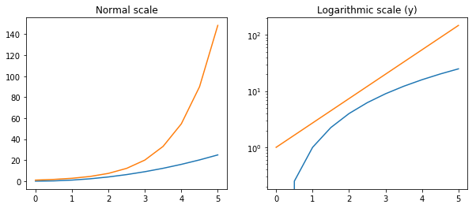
Placement of ticks and custom tick labels¶
We can explicitly determine where we want the axis ticks with set_xticks and set_yticks, which both take a list of values for where on the axis the ticks are to be placed. We can also use the set_xticklabels and set_yticklabels methods to provide a list of custom text labels for each tick location:
1 2 3 4 5 6 7 8 9 10 11 | fig, ax = plt.subplots(figsize=(10, 4)) ax.plot(x, x**2, x, x**3, lw=2) ax.set_xticks([1, 2, 3, 4, 5]) ax.set_xticklabels([r'$\alpha$', r'$\beta$', r'$\gamma$', r'$\delta$', r'$\epsilon$'], fontsize=18) #tex code yticks = [0, 50, 100, 150] ax.set_yticks(yticks) ax.set_yticklabels(["$%.1f$" % y for y in yticks], fontsize=18); # use LaTeX formatted labels |
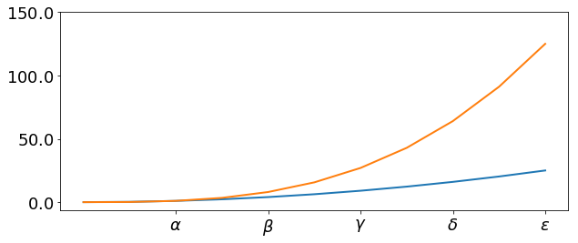
There are a number of more advanced methods for controlling major and minor tick placement in matplotlib figures, such as automatic placement according to different policies. See http://matplotlib.org/api/ticker_api.html for details.
Numbers on axes in scientific notation¶
With large numbers on axes, it is often better use scientific notation:
1 2 3 4 5 6 7 8 9 10 11 12 | fig, ax = plt.subplots(1, 1) ax.plot(x, x**2, x, np.exp(x)) ax.set_title("scientific notation") ax.set_yticks([0, 50, 100, 150]) from matplotlib import ticker formatter = ticker.ScalarFormatter(useMathText=True) formatter.set_scientific(True) formatter.set_powerlimits((-1,1)) ax.yaxis.set_major_formatter(formatter) |
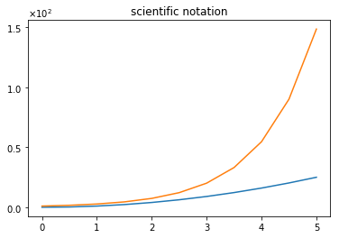
Axis number and axis label spacing¶
1 2 3 4 5 6 7 8 9 10 11 12 13 14 15 16 17 | # distance between x and y axis and the numbers on the axes matplotlib.rcParams['xtick.major.pad'] = 5 matplotlib.rcParams['ytick.major.pad'] = 5 fig, ax = plt.subplots(1, 1) ax.plot(x, x**2, x, np.exp(x)) ax.set_yticks([0, 50, 100, 150]) ax.set_title("label and axis spacing") # padding between axis label and axis numbers ax.xaxis.labelpad = 5 ax.yaxis.labelpad = 5 ax.set_xlabel("x") ax.set_ylabel("y"); |
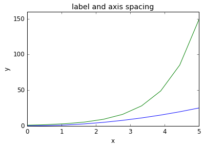
1 2 3 | # restore defaults matplotlib.rcParams['xtick.major.pad'] = 3 matplotlib.rcParams['ytick.major.pad'] = 3 |
Axis position adjustments¶
Unfortunately, when saving figures the labels are sometimes clipped, and it can be necessary to adjust the positions of axes a little bit. This can be done using subplots_adjust:
1 2 3 4 5 6 7 8 9 10 | fig, ax = plt.subplots(1, 1) ax.plot(x, x**2, x, np.exp(x)) ax.set_yticks([0, 50, 100, 150]) ax.set_title("title") ax.set_xlabel("x") ax.set_ylabel("y") fig.subplots_adjust(left=0.15, right=.9, bottom=0.1, top=0.9); |
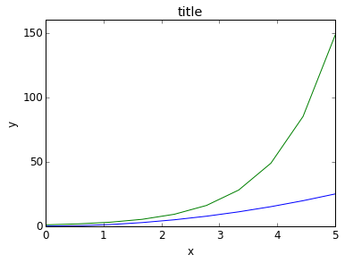
Axis grid¶
With the grid method in the axis object, we can turn on and off grid lines. We can also customize the appearance of the grid lines using the same keyword arguments as the plot function:
1 2 3 4 5 6 7 8 9 | fig, axes = plt.subplots(1, 2, figsize=(10,3)) # default grid appearance axes[0].plot(x, x**2, x, x**3, lw=2) axes[0].grid(True) # custom grid appearance axes[1].plot(x, x**2, x, x**3, lw=2) axes[1].grid(color='b', alpha=0.5, linestyle='dashed', linewidth=0.5) |
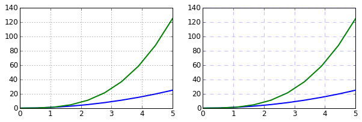
Axis spines¶
We can also change the properties of axis spines:
1 2 3 4 5 6 7 8 9 10 11 | fig, ax = plt.subplots(figsize=(6,2)) ax.spines['bottom'].set_color('blue') ax.spines['top'].set_color('blue') ax.spines['left'].set_color('red') ax.spines['left'].set_linewidth(2) # turn off axis spine to the right ax.spines['right'].set_color("none") ax.yaxis.tick_left() # only ticks on the left side |
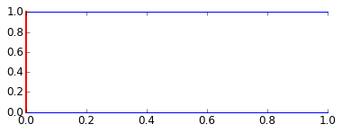
Twin axes¶
Sometimes it is useful to have dual x or y axes in a figure; for example, when plotting curves with different units together. Matplotlib supports this with the twinx and twiny functions:
1 2 3 4 5 6 7 8 9 10 11 12 | fig, ax1 = plt.subplots() ax1.plot(x, x**2, lw=2, color="blue") ax1.set_ylabel(r"area $(m^2)$", fontsize=18, color="blue") for label in ax1.get_yticklabels(): label.set_color("blue") ax2 = ax1.twinx() ax2.plot(x, x**3, lw=2, color="red") ax2.set_ylabel(r"volume $(m^3)$", fontsize=18, color="red") for label in ax2.get_yticklabels(): label.set_color("red") |
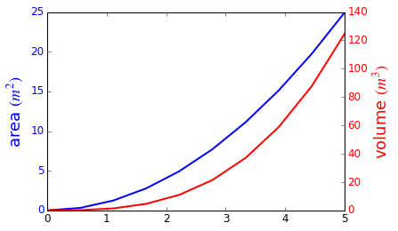
Axes where x and y is zero¶
1 2 3 4 5 6 7 8 9 10 11 12 13 | fig, ax = plt.subplots() ax.spines['right'].set_color('none') ax.spines['top'].set_color('none') ax.xaxis.set_ticks_position('bottom') ax.spines['bottom'].set_position(('data',0)) # set position of x spine to x=0 ax.yaxis.set_ticks_position('left') ax.spines['left'].set_position(('data',0)) # set position of y spine to y=0 xx = np.linspace(-0.75, 1., 100) ax.plot(xx, xx**3); |
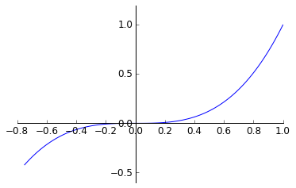
Other 2D plot styles¶
In addition to the regular plot method, there are a number of other functions for generating different kind of plots. See the matplotlib plot gallery for a complete list of available plot types: http://matplotlib.org/gallery.html. Some of the more useful ones are show below:
1 | n = np.array([0,1,2,3,4,5]) |
1 2 3 4 5 6 7 8 9 10 11 12 13 | fig, axes = plt.subplots(1, 4, figsize=(12,3)) axes[0].scatter(xx, xx + 0.25*np.random.randn(len(xx))) axes[0].set_title("scatter") axes[1].step(n, n**2, lw=2) axes[1].set_title("step") axes[2].bar(n, n**2, align="center", width=0.5, alpha=0.5) axes[2].set_title("bar") axes[3].fill_between(x, x**2, x**3, color="green", alpha=0.5); axes[3].set_title("fill_between"); |

Text annotation¶
Annotating text in matplotlib figures can be done using the text function. It supports LaTeX formatting just like axis label texts and titles:
1 2 3 4 5 6 | fig, ax = plt.subplots() ax.plot(xx, xx**2, xx, xx**3) ax.text(0.15, 0.2, r"$y=x^2$", fontsize=20, color="blue") ax.text(0.65, 0.1, r"$y=x^3$", fontsize=20, color="green"); |
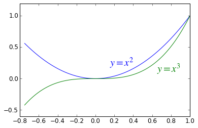
Figures with multiple subplots and insets¶
Axes can be added to a matplotlib Figure canvas manually using fig.add_axes or using a sub-figure layout manager such as subplots, subplot2grid, or gridspec:
subplots¶
1 2 | fig, ax = plt.subplots(2, 3) fig.tight_layout() |
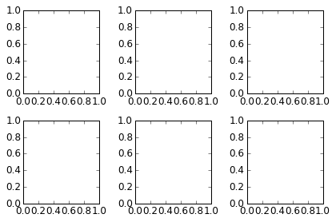
subplot2grid¶
1 2 3 4 5 6 7 | fig = plt.figure() ax1 = plt.subplot2grid((3,3), (0,0), colspan=3) ax2 = plt.subplot2grid((3,3), (1,0), colspan=2) ax3 = plt.subplot2grid((3,3), (1,2), rowspan=2) ax4 = plt.subplot2grid((3,3), (2,0)) ax5 = plt.subplot2grid((3,3), (2,1)) fig.tight_layout() |
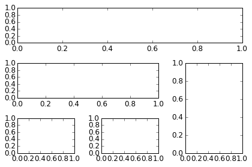
gridspec¶
1 | import matplotlib.gridspec as gridspec |
1 2 3 4 5 6 7 | fig = plt.figure() gs = gridspec.GridSpec(2, 3, height_ratios=[2,1], width_ratios=[1,2,1]) for g in gs: ax = fig.add_subplot(g) fig.tight_layout() |

add_axes¶
Manually adding axes with add_axes is useful for adding insets to figures:
1 2 3 4 5 6 7 8 9 10 11 12 13 14 15 16 17 18 | fig, ax = plt.subplots() ax.plot(xx, xx**2, xx, xx**3) fig.tight_layout() # inset inset_ax = fig.add_axes([0.2, 0.55, 0.35, 0.35]) # X, Y, width, height inset_ax.plot(xx, xx**2, xx, xx**3) inset_ax.set_title('zoom near origin') # set axis range inset_ax.set_xlim(-.2, .2) inset_ax.set_ylim(-.005, .01) # set axis tick locations inset_ax.set_yticks([0, 0.005, 0.01]) inset_ax.set_xticks([-0.1,0,.1]); |
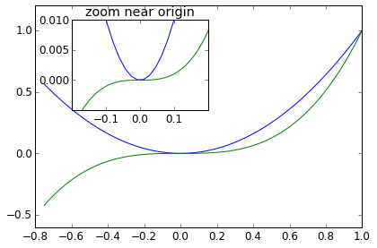
Colormap and contour figures¶
Colormaps and contour figures are useful for plotting functions of two variables. In most of these functions we will use a colormap to encode one dimension of the data. There are a number of predefined colormaps. It is relatively straightforward to define custom colormaps. For a list of pre-defined colormaps, see: http://www.scipy.org/Cookbook/Matplotlib/Show_colormaps
1 2 3 4 5 | alpha = 0.7 phi_ext = 2 * np.pi * 0.5 def flux_qubit_potential(phi_m, phi_p): return 2 + alpha - 2 * np.cos(phi_p) * np.cos(phi_m) - alpha * np.cos(phi_ext - 2*phi_p) |
1 2 3 4 | phi_m = np.linspace(0, 2*np.pi, 100) phi_p = np.linspace(0, 2*np.pi, 100) X,Y = np.meshgrid(phi_p, phi_m) Z = flux_qubit_potential(X, Y).T |
pcolor¶
1 2 3 4 | fig, ax = plt.subplots() p = ax.pcolor(X/(2*np.pi), Y/(2*np.pi), Z, cmap=matplotlib.cm.RdBu, vmin=abs(Z).min(), vmax=abs(Z).max()) cb = fig.colorbar(p, ax=ax) |
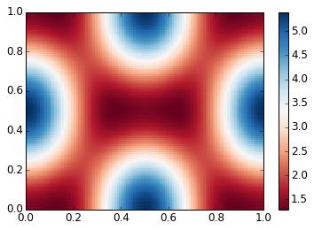
imshow¶
1 2 3 4 5 6 | fig, ax = plt.subplots() im = ax.imshow(Z, cmap=matplotlib.cm.RdBu, vmin=abs(Z).min(), vmax=abs(Z).max(), extent=[0, 1, 0, 1]) im.set_interpolation('bilinear') cb = fig.colorbar(im, ax=ax) |
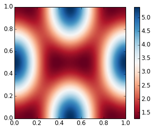
contour¶
1 2 3 | fig, ax = plt.subplots() cnt = ax.contour(Z, cmap=matplotlib.cm.RdBu, vmin=abs(Z).min(), vmax=abs(Z).max(), extent=[0, 1, 0, 1]) |
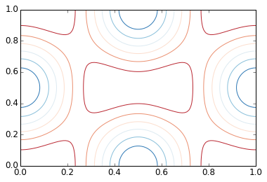
3D figures¶
To use 3D graphics in matplotlib, we first need to create an instance of the Axes3D class. 3D axes can be added to a matplotlib figure canvas in exactly the same way as 2D axes; or, more conveniently, by passing a projection='3d' keyword argument to the add_axes or add_subplot methods.
1 | from mpl_toolkits.mplot3d.axes3d import Axes3D |
Surface plots¶
1 2 3 4 5 6 7 8 9 10 11 | fig = plt.figure(figsize=(14,6)) # `ax` is a 3D-aware axis instance because of the projection='3d' keyword argument to add_subplot ax = fig.add_subplot(1, 2, 1, projection='3d') p = ax.plot_surface(X, Y, Z, rstride=4, cstride=4, linewidth=0) # surface_plot with color grading and color bar ax = fig.add_subplot(1, 2, 2, projection='3d') p = ax.plot_surface(X, Y, Z, rstride=1, cstride=1, cmap=matplotlib.cm.coolwarm, linewidth=0, antialiased=False) cb = fig.colorbar(p, shrink=0.5) |
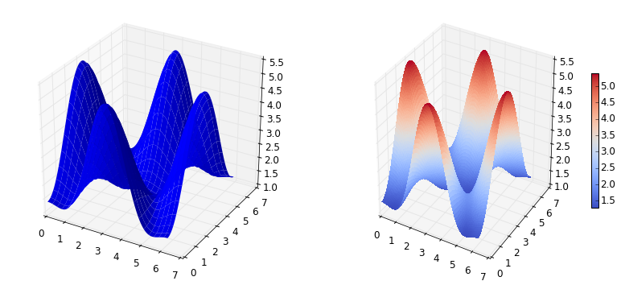
Wire-frame plot¶
1 2 3 4 5 | fig = plt.figure(figsize=(8,6)) ax = fig.add_subplot(1, 1, 1, projection='3d') p = ax.plot_wireframe(X, Y, Z, rstride=4, cstride=4) |
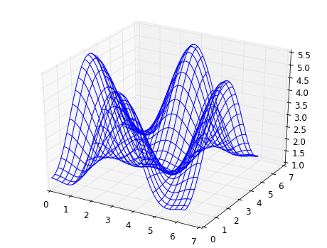
Coutour plots with projections¶
1 2 3 4 5 6 7 8 9 10 11 12 | fig = plt.figure(figsize=(8,6)) ax = fig.add_subplot(1,1,1, projection='3d') ax.plot_surface(X, Y, Z, rstride=4, cstride=4, alpha=0.25) cset = ax.contour(X, Y, Z, zdir='z', offset=-np.pi, cmap=matplotlib.cm.coolwarm) cset = ax.contour(X, Y, Z, zdir='x', offset=-np.pi, cmap=matplotlib.cm.coolwarm) cset = ax.contour(X, Y, Z, zdir='y', offset=3*np.pi, cmap=matplotlib.cm.coolwarm) ax.set_xlim3d(-np.pi, 2*np.pi); ax.set_ylim3d(0, 3*np.pi); ax.set_zlim3d(-np.pi, 2*np.pi); |
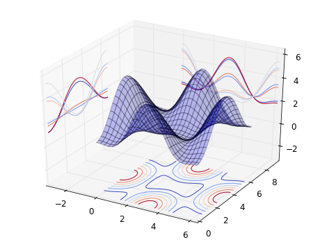
Further reading¶
- http://www.matplotlib.org - The project web page for matplotlib.
- https://github.com/matplotlib/matplotlib - The source code for matplotlib.
- http://matplotlib.org/gallery.html - A large gallery showcaseing various types of plots matplotlib can create. Highly recommended!
- http://www.loria.fr/~rougier/teaching/matplotlib - A good matplotlib tutorial.
- http://scipy-lectures.github.io/matplotlib/matplotlib.html - Another good matplotlib reference.